SEMANA 7 DOBLADO Y CORTADO DE METAL
Medición de la pieza-Karen
El primer paso siempre es la medición y el trazado del material, y para esto se utiliza generalmente el vernier. Esta herramienta es fundamental para obtener medidas exactas en milímetros o pulgadas, ya sea en su versión análoga o digital.
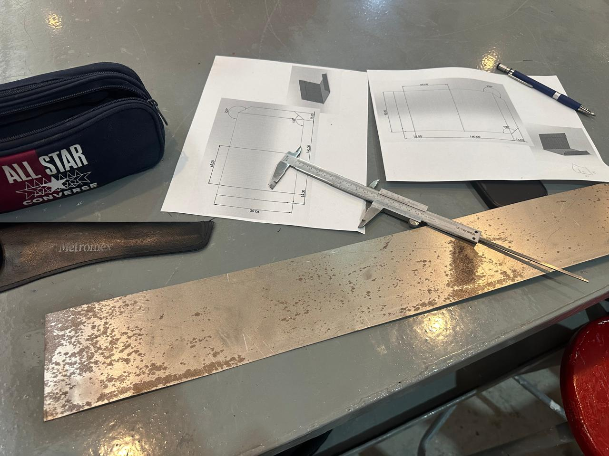
El vernier se compone de dos escalas: una fija (escala principal) y una móvil (nonius o escala vernier). Para medir, se coloca la pieza entre las mordazas del instrumento:
1-Las mordazas grandes sirven para medir dimensiones exteriores (por ejemplo, el ancho o diámetro de una pieza).
2-Las mordazas pequeñas se usan para medir el interior de orificios o tubos.
3-Y la varilla posterior permite medir profundidades o alturas.
4-Una vez ajustadas las mordazas a la pieza, se observa en la escala dónde coincide una línea del nonius con la escala principal para leer la medida con precisión. En los vernier digitales, el valor aparece directamente en la pantalla, lo que facilita el proceso.
5-Con estas medidas, se marcan las zonas de corte y doblado usando marcadores especiales para metal, asegurando que cada línea sea exacta antes de pasar a las máquinas.
Corte de la pieza
Para el corte, se emplean herramientas como la guillotina o una cortadora que funciona presionando un pedal para accionar una cuchilla pesada que corta la lámina con gran fuerza y precisión. También se usan tijeras industriales para cortes más pequeños o curvos.
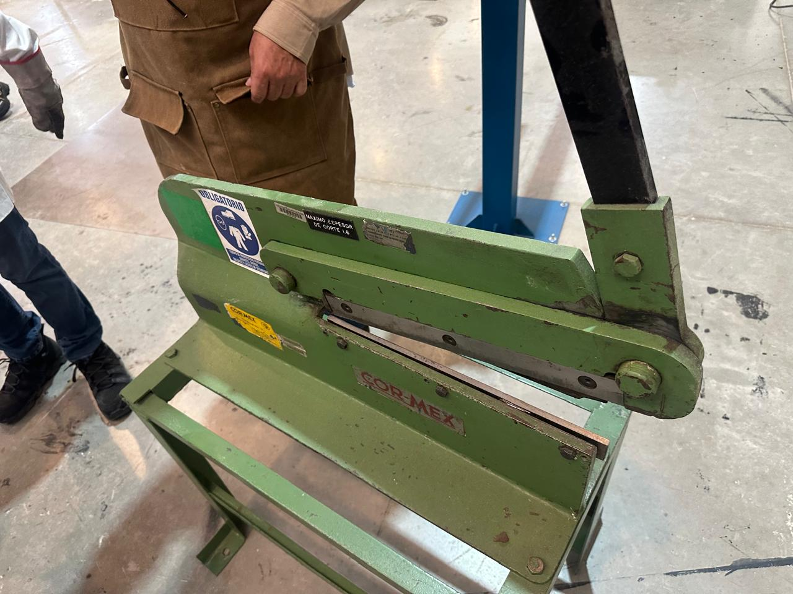
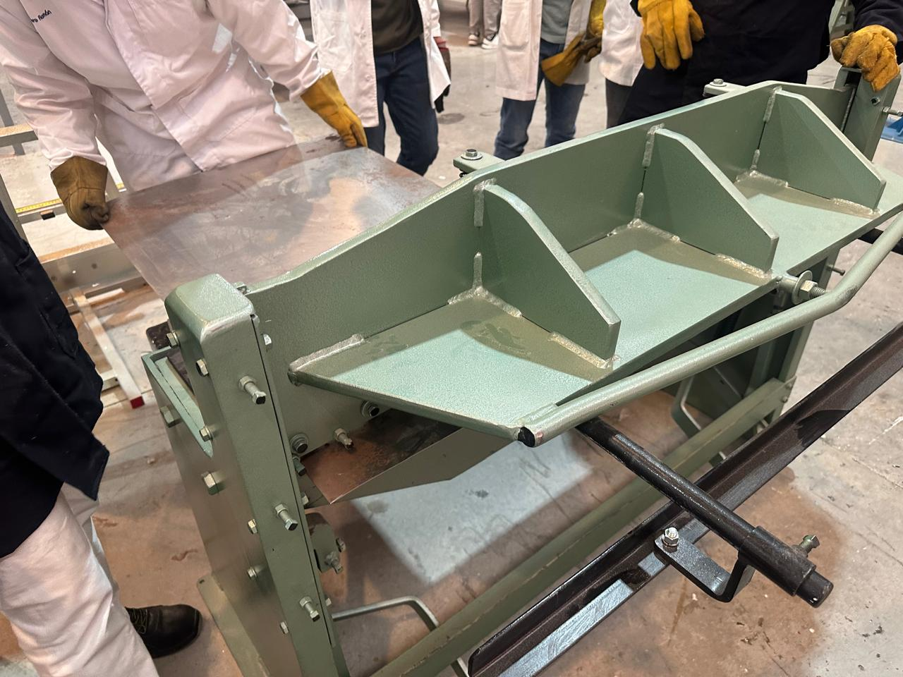
Doblado de pieza
En el doblado, se utilizan dobladoras de metal, que aplican presión sobre la lámina para generar ángulos según la forma requerida, manteniendo la integridad del material.
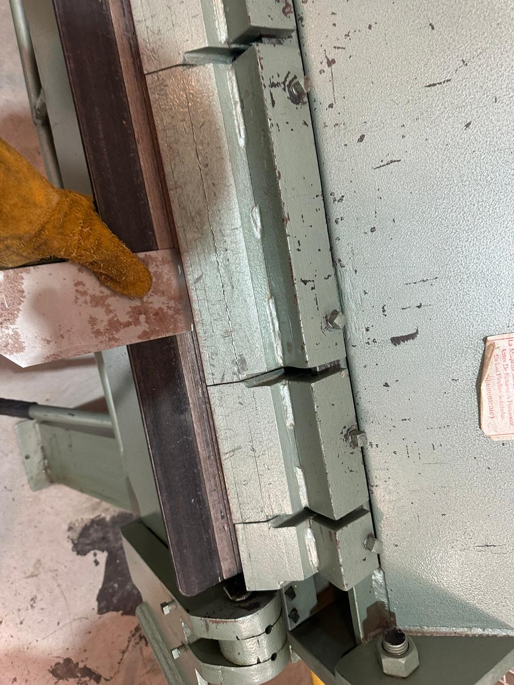
Unión de piezas
Finalmente, para unir las piezas, se usa una máquina de soldadura por puntos, que aplica corriente eléctrica a través de dos electrodos. Al hacer contacto con las superficies metálicas, el calor generado funde una pequeña zona entre ambas, logrando una unión firme sin necesidad de agregar material adicional.
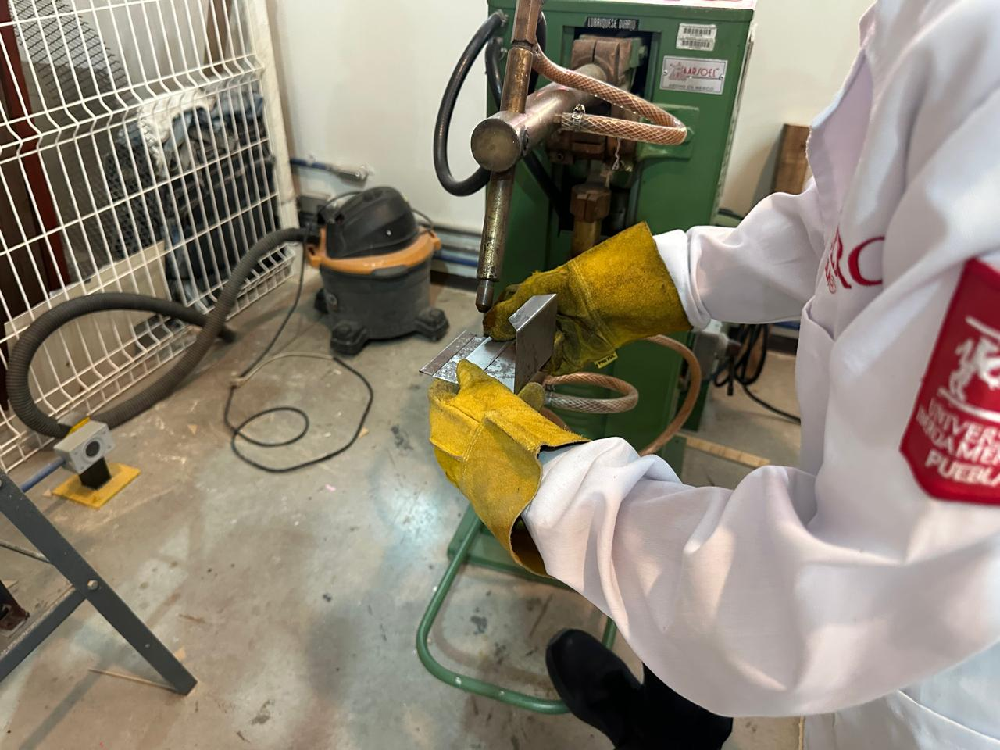
Pieza metálica Samantha
Durante esta práctica realizamos el proceso completo para transformar una lámina metálica en una pieza utilizando diferentes máquinas del IDIT. El propósito principal fue aprender a manipular el material desde su estado inicial, usando instrumentos de medición de precisión y equipo industrial real.
1. Medición y preparación del material
El trabajo comenzó tomando todas las dimensiones necesarias de la pieza. Para lograr precisión utilizamos un vernier, una herramienta indispensable en la manufactura porque permite medir con exactitud tanto exteriores como interiores y profundidades. Con él verificamos:
- El largo y ancho de la lámina.
- Distancias entre dobleces.
- Profundidades y espacios donde se requería mayor precisión.
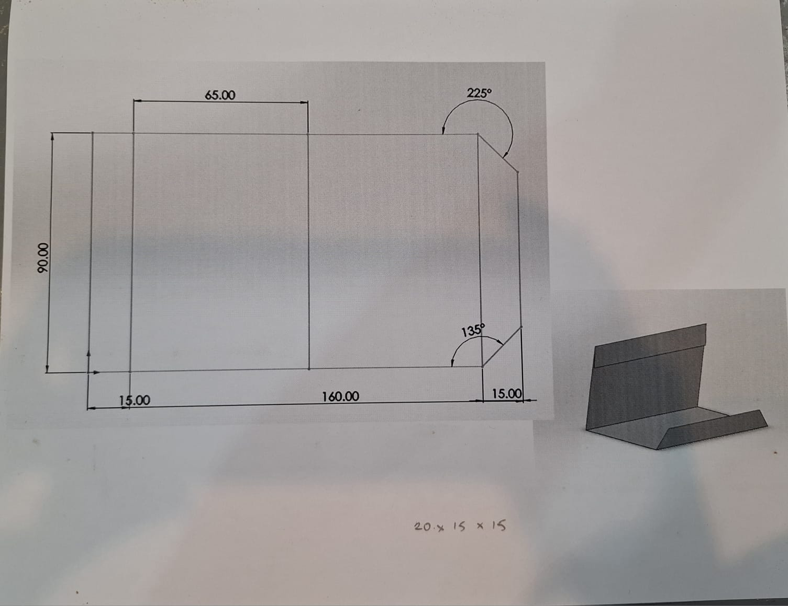
Una vez obtenidas las medidas, marcamos en la lámina las líneas guía para los cortes y pliegues utilizando marcadores especiales para metal. Esta etapa define la exactitud del resto del proceso.
2. Corte del material
Una vez marcado el material, se procedió al corte utilizando una guillotina accionada por pedal, que permitió separar las secciones principales con un corte recto y uniforme. Para ajustes menores o zonas que requerían más detalle, se utilizaron tijeras industriales, adecuadas para recortes específicos.
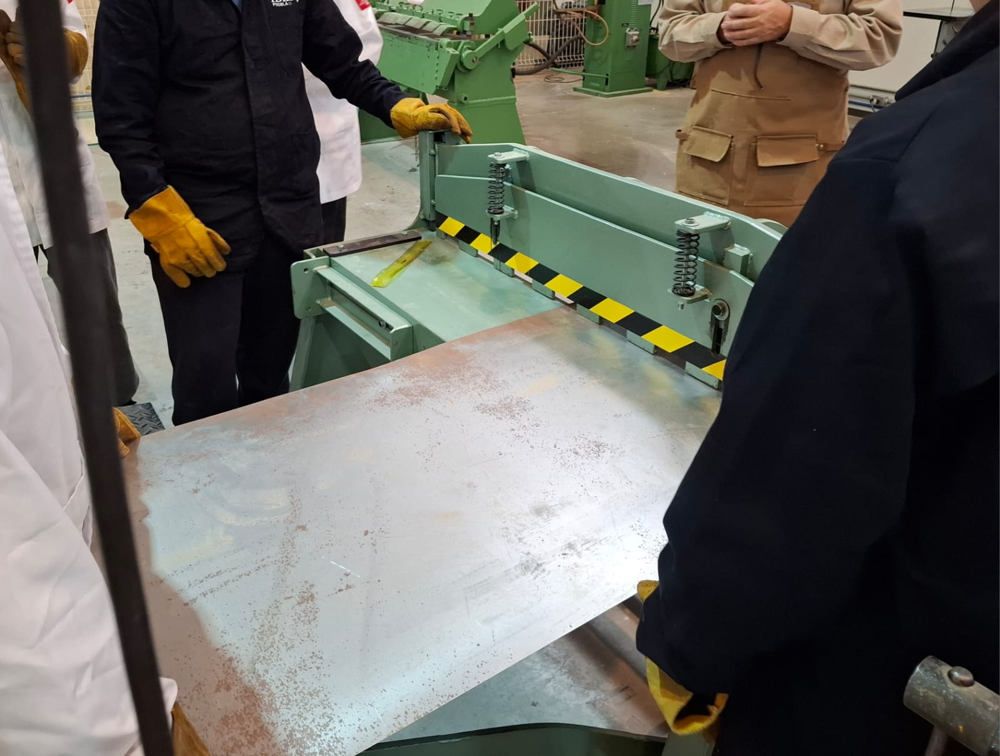
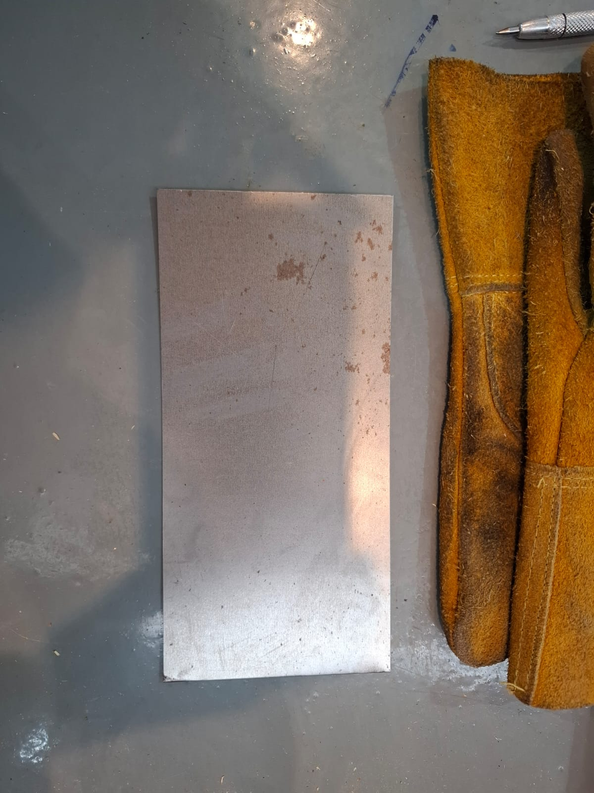
3. Doblado de la pieza
Con las piezas ya cortadas, se pasó al proceso de doblado en una dobladora de lámina. La lámina se colocó sobre la máquina alineando la marca del pliegue con el punto de presión, y luego se accionó el mecanismo para generar el ángulo requerido. Este procedimiento permitió obtener los dobleces necesarios para dar forma a la pieza.
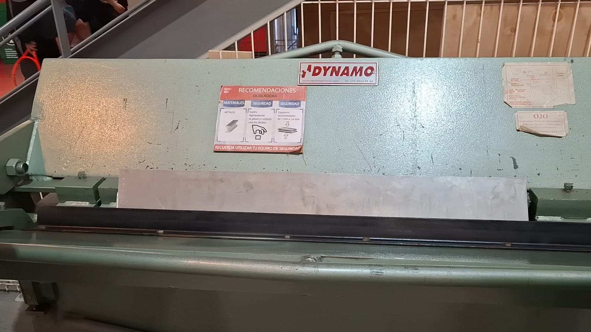
4. Soldadura por puntos
Finalmente, las partes se unieron mediante soldadura por puntos. Las superficies se colocaron entre los dos electrodos de la máquina, y al aplicarse la corriente eléctrica se generó una fusión localizada que fijó ambas piezas en cada punto de contacto.
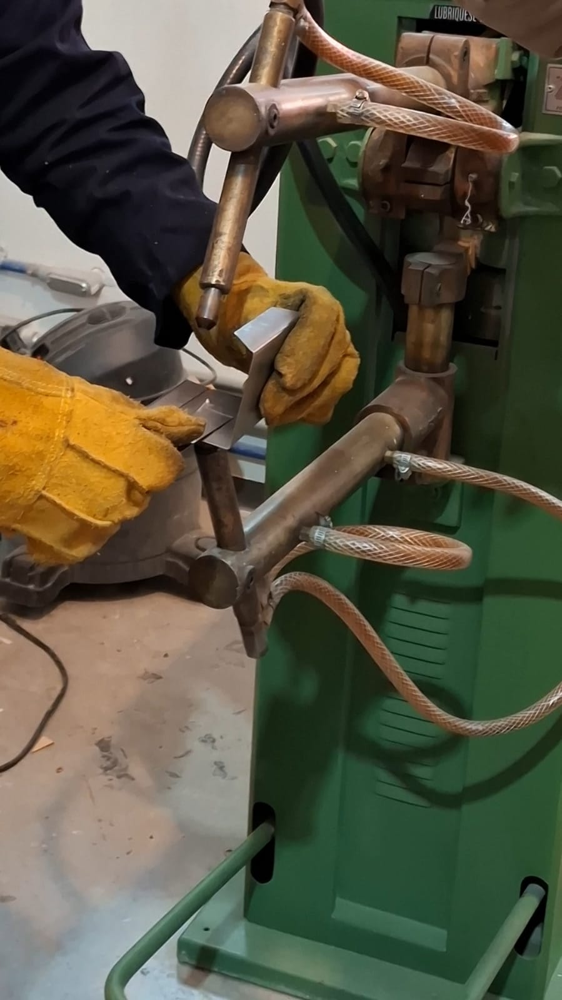
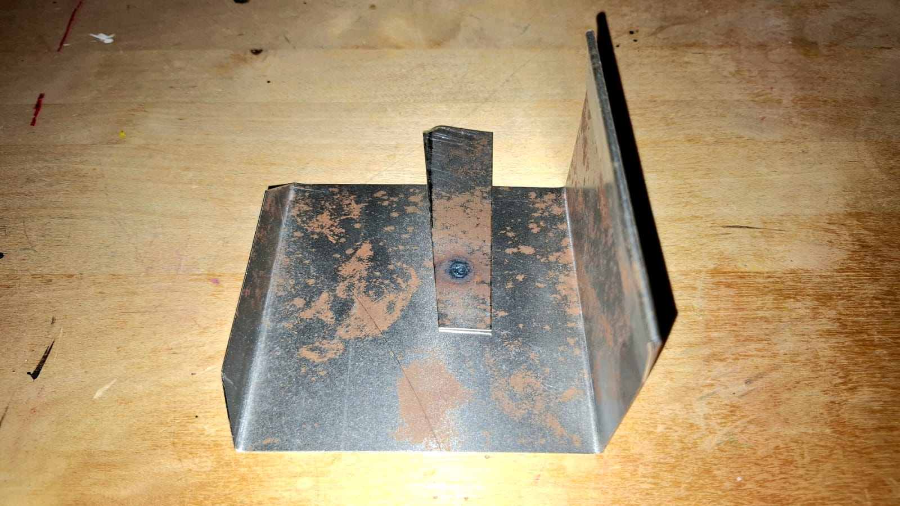